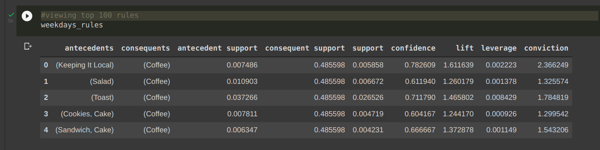
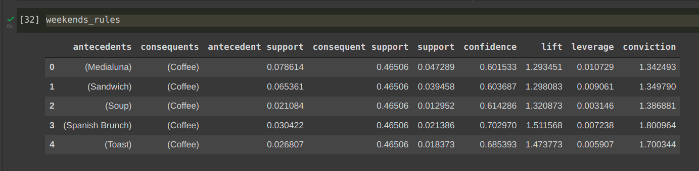

To find the association rules between the items using the Apriori Algorithm. Or in other words, you have to find out those items/itemset that customers bought together which helps the owner for store layout/marketing. And then show the relative Sales of the data in Tableau Dashboard
Python
Google Colab
Tableau
The algorithm used to find the association rules is Apriori Algorithm.
Apriori is an algorithm for frequent item set mining and association rule learning over relational databases. It proceeds by identifying the frequent individual items in the database and extending them to larger and larger item sets as long as those item sets appear sufficiently often in the database. The frequent item sets determined by Apriori can be used to determine association rules which highlight general trends in the database: this has applications in domains such as market basket analysis.
Association Rule Mining is used when you want to find an association between different objects in a set, find frequent patterns in a transaction database, relational databases or any other information repository. The applications of Association Rule Mining are found in Marketing, Basket Data Analysis (or Market Basket Analysis) in retailing, clustering and classification. It can tell you what items do customers frequently buy together by generating a set of rules called Association Rules.
The provided dataset had transactions labeled as weekend or weekdays.
We divided the dataset into two parts : Weekdays & Weekends.
And used Apriori Algorithm to train our model on both the datasets individually in order to find the association rules.
WEEKDAYS RULES:

WEEKEND RULES:
